찍어 두면, 놓치면 안 될 때만
한 줄로 챙겨 드려요
alskapark.github.io/bapsim-prototype
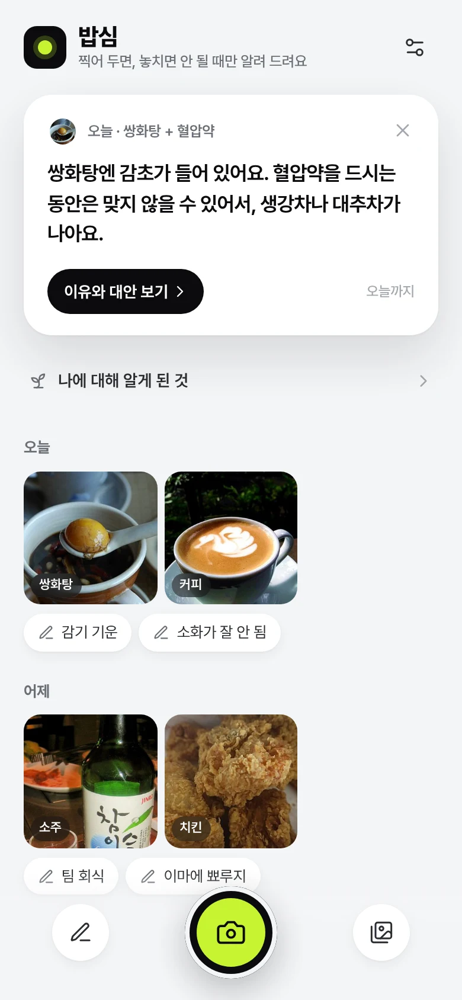
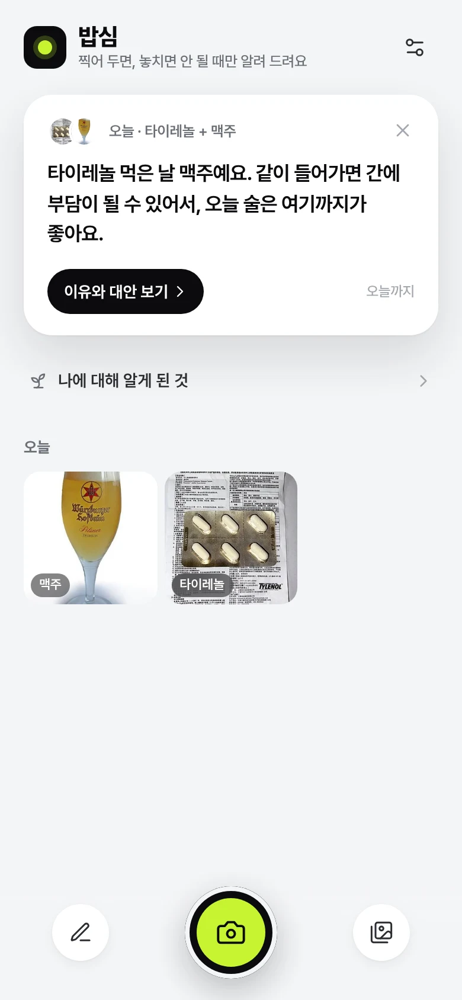
둘 다 간에서 처리돼서, 같이 들어가면 간에 부담이 될 수 있어요.
쌍화탕의 감초는 혈압약을 먹는 동안엔 맞지 않을 수 있어요.
커피의 탄닌이 철분과 붙어서 흡수를 줄일 수 있어요.
아무 생각 없이 먹고 마신 걸 찍어 두면,
내 몸 상태나 먹는 약 때문에
놓치면 안 되는 순간에만 한 줄로
챙겨 주는 앱
이게 없으면 그 한 줄을 놓치거나, 믿지 못하거나, 찍기가 귀찮아지는가? 아니면 뺀다.
34초 데모 · 찍기 → 한 줄 → 닫으면 오늘은 끝
설정이 끝나면 묻지 않아요. 답 안 한 질문이 쌓이면 피로가 되니까요.
칼로리·그램·점수·몸무게 없음. 숫자는 집착을 불러요. 가격만 예외예요.
식습관을 고치라고 하지 않아요. 먹던 그대로에서 조금이라도 더 나은 방향만.
모든 말은 내 기록에서 추적돼요. 근거 줄에 그 사진이 함께 보여요.
"물 많이 드세요"처럼 누구나 아는 말은 하지 않아요. 할 말이 없으면 조용히.
제품은 탭한 뒤에만. 특가·BEST 없이 "꼭 사지 않아도 돼요".
쌍화탕도 철분제도 커피와 같은 카드 형식. 특별 대우하지 않아요.
"~일 수 있어요", "조금이라도 도움이 될 수 있어요". 진단하지 않아요.
앱 셔터 · 알림창 위젯 셔터 · 연필로 몸 상태 한 줄
'확인 중' → 이름표. 토스트도 질문도 없음
내 약·몸 상태와 겹칠 때만. 하루 최대 하나
이유 한 단락, 대신 이렇게, 제품은 접힌 채로
쌓이는 목록 없음. 다음 날이면 사라져요
사진 + 불편·좋았던 날 칩
우연 한 번은 패턴이 아니에요
‘~였어요’ · 원인이라 단정하지 않음
빼보기 · 더 먹어보기 · 종류 바꾸기
실제 순간 하나로 설명해요. 타이레놀 → 맥주 → 한 줄 카드. 2장 ‘찍어 두기만 하세요’, 3장 ‘내 약과 몸에 맞춰서’.
혈압약·고지혈증약·타이레놀·감기약·아스피린·와파린·철분제·항생제. 칩마다 실제 상호작용 규칙과 연결돼요.
아무것도 안 고르면 ‘나중에 할게요’, 하나라도 고르면 ‘완료’. 샘플 기록으로 바로 둘러볼 수도 있어요.
약 정보는 민감해서 자물쇠와 함께 한 줄로 약속해요. 알레르기는 뺐어요. 본인이 이미 알고, 사진으로는 못 잡아요.
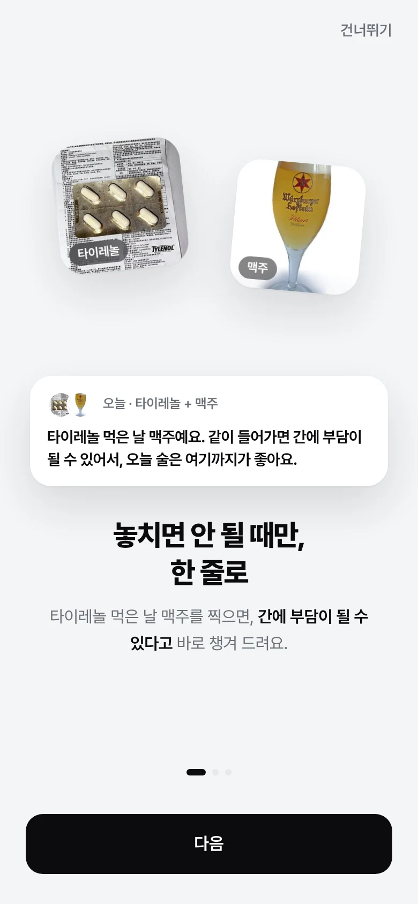
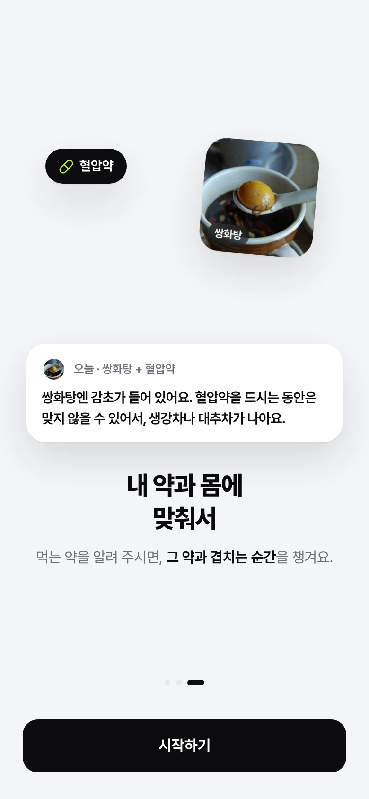
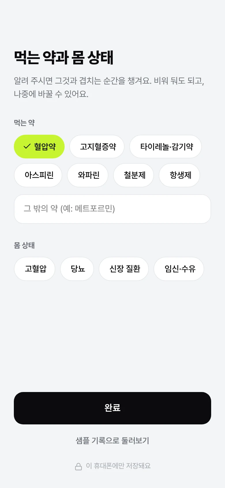
엄지가 닿는 하단 중앙, 유일한 주 동작이에요. 기본 카메라라 따로 권한을 묻지 않아요.
썸네일에 작은 ‘확인 중’이 깜빡이다 약 1초 뒤 ‘타이레놀’로 바뀌어요. 토스트도, 고르기 트레이도 없어요.
틀린 이름표가 틀린 한 줄을 만들어요. 그래도 묻지 않아요.
이 사진의 후보 2~3개 + 직접 적기. 직접 적은 이름도 글자에서 성질(카페인·유제품 등)을 찾아 써요.
프로토타입은 서버 없이 모의 인식(파일 이름 단서, 샘플 이름표). 실제 서비스에선 이미지 인식 모델이 들어가요.
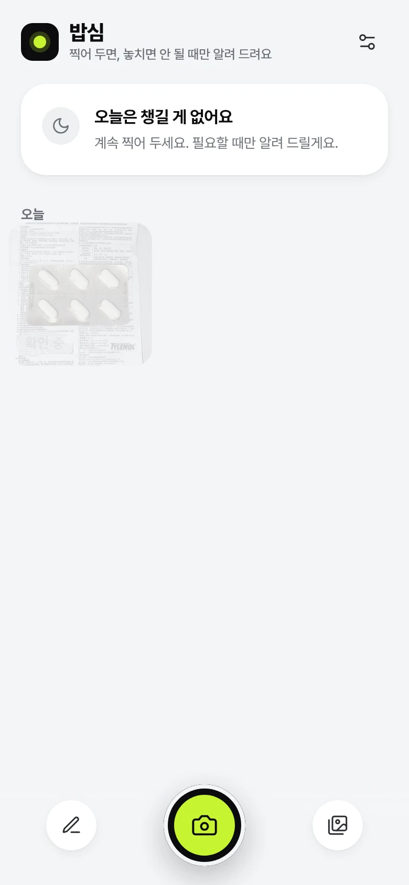
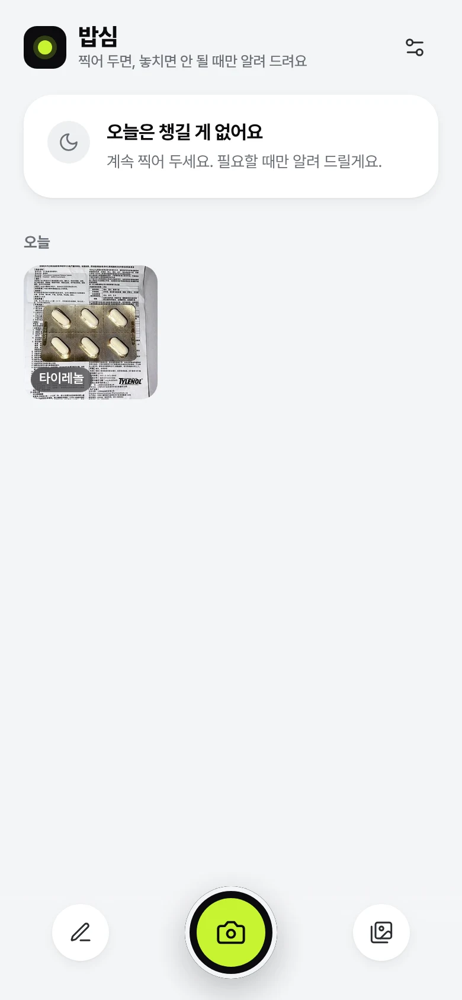
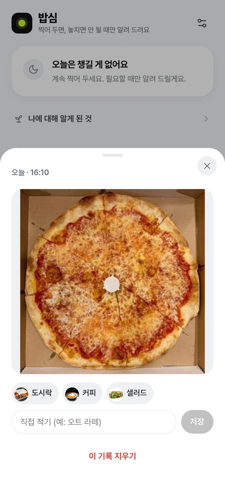
“오늘 · 타이레놀 + 맥주”와 그 사진. 왜 지금 이 말을 하는지 바로 보여요.
본문은 한 줄 서술. 답할 필요가 없어서 쌓이지 않아요.
‘이유와 대안 보기’ → 이유 한 단락, 대신 이렇게, 접힌 제품 비교.
닫으면 그날은 끝, 같은 종류는 3일 동안 안 떠요. 그냥 둬도 다음 날 사라져요.
타이레놀 먹은 날 맥주예요. 같이 들어가면 간에 부담이 될 수 있어서, 오늘 술은 여기까지가 좋아요.
쌍화탕엔 감초가 들어 있어요. 혈압약을 드시는 동안엔 맞지 않을 수 있어서, 생강차나 대추차가 나아요.
자몽은 일부 혈압약의 효과를 세게 만들 수 있어요. 약을 드시는 동안엔 다른 과일 주스가 나아요.
철분제 먹은 날 커피도 있었어요. 둘 사이에 시간 차를 두면 철분이 조금 더 잘 흡수될 수 있어요.
어젯밤 맥주 기록이 있어요. 오늘 오전엔 물을 평소보다 몇 잔 더 마시면 조금 편할 수 있어요.
오늘은 챙길 게 없어요 · 계속 찍어 두세요. 필요할 때만 알려 드릴게요.
하루에 수십 번 내려 보는 알림창. One UI 진행 중 알림처럼 어두운 알약 카드라 광고처럼 튀지 않아요.
할 말이 없으면 꾸며 내지 않아요. 한 줄이 있는 날만 근거 + 짧은 한 줄로 바뀌고, 누르면 이유 시트가 열려요.
불편(변비·설사·가스·소화 불편·뾰루지·두통·피곤)과 좋았던 날(속 편함·개운함·피부 좋음)을 같은 무게로.
내 칩이 앞에 와요. 숫자·진행률·연속 기록, 몸무게는 뺐어요.
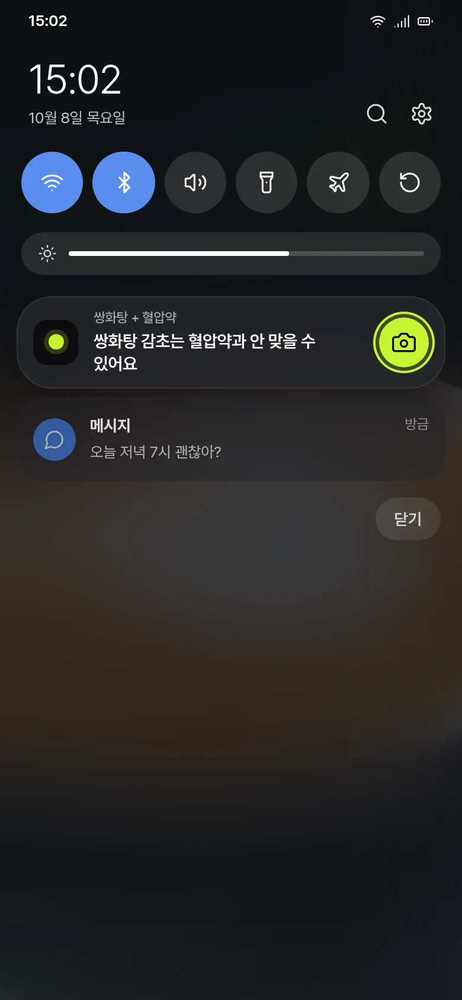
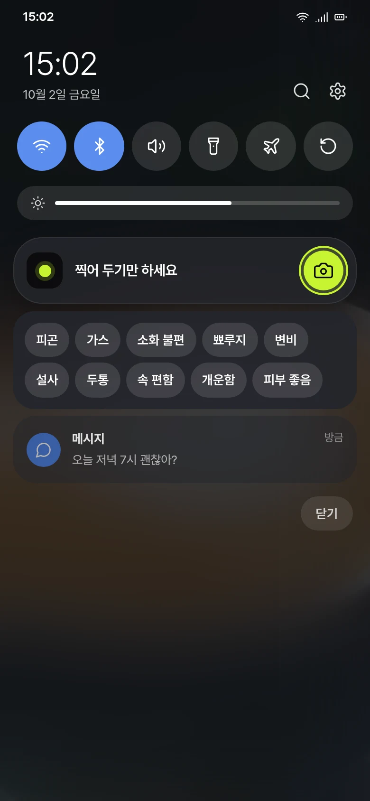
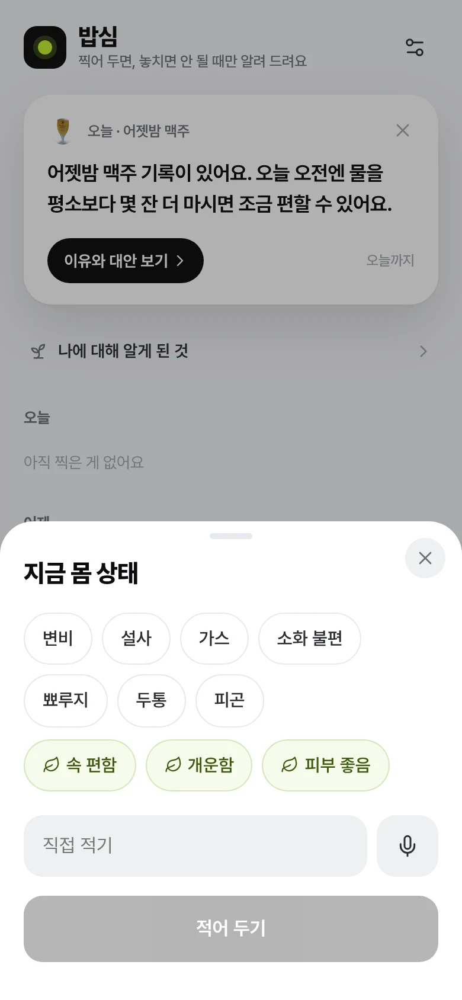
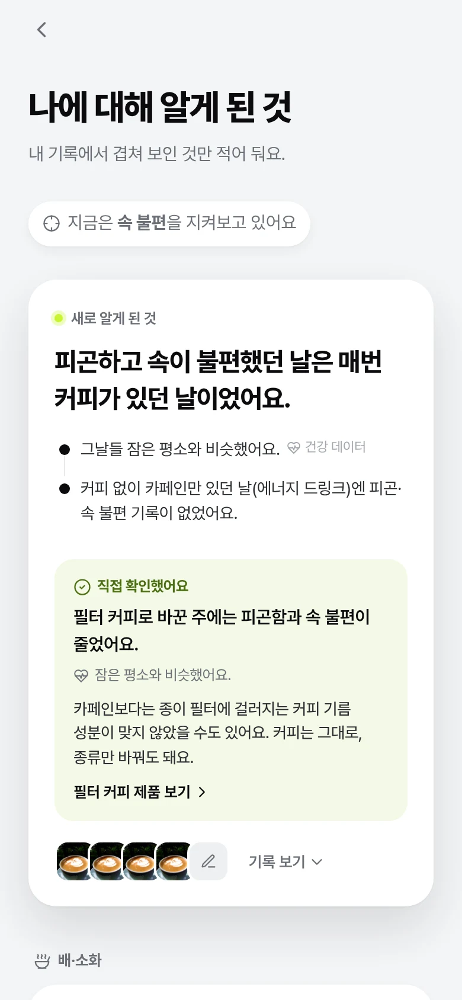
직접 적은 메모가 매번 같은 무리와 겹칠 때. 우연 한 번은 말하지 않아요.
‘~였어요’로만. 맨 아래 한 번, “기록이 겹쳤다는 뜻일 뿐, 원인을 뜻하지 않아요.”
배·소화 / 피부 / 잠·기운 / 몸 / 약(챙겼던 조합은 옅은 라임으로 구분).
불편 중 빈도 × 영향 + 최근성으로 하나만. 여러 개를 쫓으면 아무것도 안 가려져요.
기름짐·유제품·카페인·탄산·술·매움·단맛 + 커피 종류(라떼·아메리카노·필터·디카페인). 영양소는 안 봐요.
빼보기·더 먹어보기·종류 바꾸기. 결과는 확인됨 · 비슷함 · 계속 먹었음. 진행은 점 일곱 개, 숫자 없음.
조심스러운 추측까지만: 카페인보다는 종이 필터에 걸러지는 커피 기름 성분이 맞지 않았을 수도 있어요. 커피는 그대로, 종류만 바꿔도 돼요.
‘이유와 대안’ 안의 ‘제품으로 고른다면’을 펼친 사람만. 예) A사·B사 드립백, C사 필터+원두. “꼭 사지 않아도 돼요.”
최저~최고를 한 막대에. 라임 점은 확인된 곳 중 가장 싼 곳, 더 싸도 확인 안 된 곳은 회색. 정품 확인이 가격보다 먼저예요.
차이를 바로 보게, 어느 쪽도 권하지 않아요. 링크는 확인된 가장 싼 곳 하나만.
“지금이 최근 최저가에 가까워요.” 지켜보기를 켜면 다른 한 줄이 없는 날에만 알려요. 숫자는 가격만 예외.
모든 제품·가격은 예시 데이터예요.
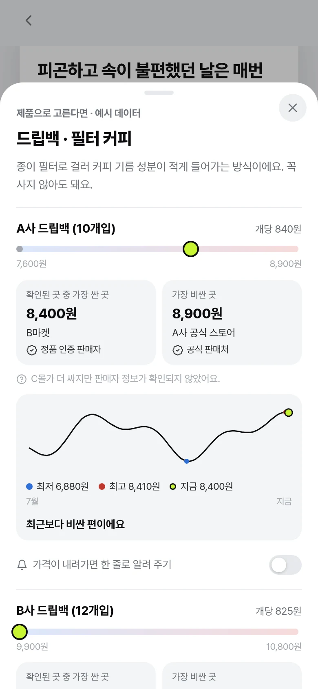
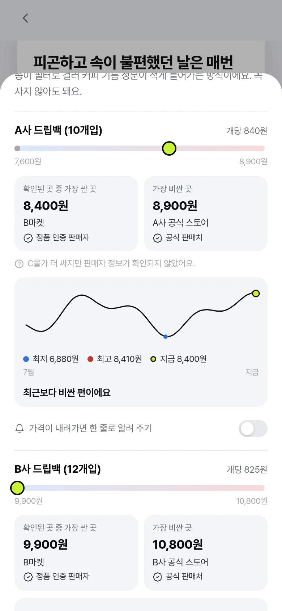
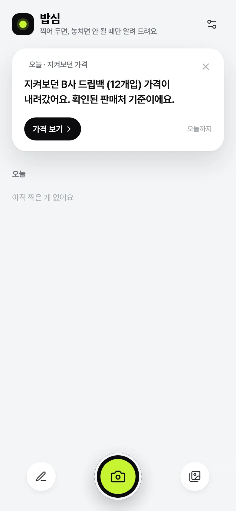
같이 쓰면 안 되는 약 조합. 약 + 약 한 줄의 1차 근거.
‘이 약을 사용하는 동안 주의해야 할 약 또는 음식’ 문장. 음식·술과의 겹침을 찾는 곳.
성분·주의사항 원문. 제품 이름을 성분으로 풀어요.
모양·색·각인. 알약 사진을 알아보는 단서.
스크래핑으로 보강 예정.
지금 프로토타입은 손으로 쓴 예시 규칙이에요. 모든 문구는 약사 검수 전이고, 시트마다 “진단·처방이 아닌 일반 정보예요”를 둬요.
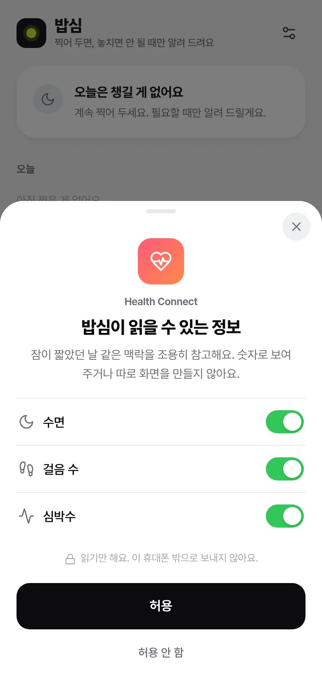
수면·심박·활동(걸음 수)만 읽어요. 몸무게는 제외. 설정 안의 선택 한 줄, 첫 화면엔 없어요.
숫자·대시보드 없이 출처만. “이런 날이기도 했어요: 잠이 짧았던 날.”
잠과 겹쳤는지는 단정하지 않아요. 수면만으로는 한 줄을 띄우지 않아요(습관 교정이 되니까요).
권한 화면에서 그대로 약속해요.
답 안 한 질문이 쌓여 피로가 돼요. 한 문장 컨셉과도 무관해요.
숫자는 집착을 부르고, 앱이 식단 관리 앱으로 변해요.
숫자로 재는 항목이라 컨셉 밖. 메모 칩에서도 뺐어요.
찍을 때마다 뭔가 뜨면 찍기가 귀찮아져요. 찍은 직후엔 아무것도 안 떠요.
‘놓치면 안 되는 순간’과 상관없고, 쇼핑 앱처럼 보여요.
할 말이 없는데 채우면 뻔한 건강 상식이 돼요. 잔소리 → 알림 끔.
서버 없이는 가짜 버튼이고, 진단처럼 오해받아요. 컨셉과도 거리가 있어요.
내 약·몸과 겹치는 순간이 아니에요. 광고처럼 보이기 쉬워요.
그 밖에 뺀 것 · 찍을 때마다 뜨는 이름표 고르기 트레이 · 탭 메뉴·통계·점수 · 알레르기 입력 · 연속 기록·진행률 · 위젯의 닫기/더 보기 버튼 · 수면만으로 뜨는 한 줄
모의 인식을 모델로. 상위 후보 2~3개가 그대로 ‘바꾸기’ 후보가 돼요.
식약처 DUR·e약은요·허가정보·낱알식별을 붙이고, 모든 문구를 약사가 검수해요.
지금은 웹 목업. Android 진행 중 알림과 셔터, 길게 누르기 메모 칩을 실제로.
지금은 빈도·영향·최근성으로 자동으로 하나만 골라요. 사용자가 직접 바꿀 수 있게 할지 정해야 해요.
질문 없이 한 번 탭으로 컨디션을 남기게 하면 겹침이 더 빨리 보일까?
지금 이름은 밥심. 후보 모두 상표 검색이 필요해요.